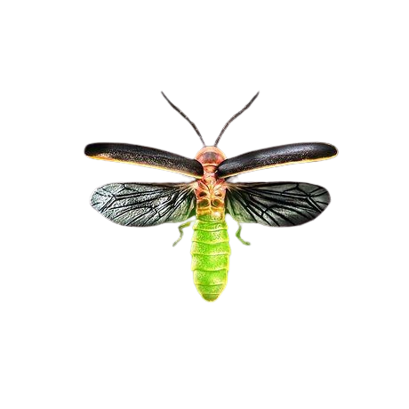

A Extinção
Vagalumes
Os vagalumes estão enfrentando um risco crescente de extinção devido a vários fatores, muitos dos quais são consequência das atividades humanas. Aqui estão alguns dos principais motivos:
Perda de Habitat: O desmatamento e a urbanização estão destruindo os habitats naturais dos vagalumes, como florestas, pântanos e áreas com vegetação densa. Sem esses ambientes, os vagalumes têm dificuldade em encontrar locais para se reproduzir e se alimentar.
Poluição Lumínica: A luz artificial das cidades, estradas e residências interfere com os sinais luminosos que os vagalumes usam para atrair parceiros. Isso dificulta a reprodução e, consequentemente, reduz a população de vagalumes.
Pesticidas e Poluição: O uso de pesticidas na agricultura e a poluição de rios e lagos podem envenenar os vagalumes e suas larvas. Isso impacta diretamente a sobrevivência desses insetos.
Mudanças Climáticas: As alterações no clima afetam os ciclos de vida dos vagalumes, que dependem de condições climáticas específicas para se desenvolverem. Mudanças na temperatura e nos padrões de precipitação podem desestabilizar esses ciclos.
